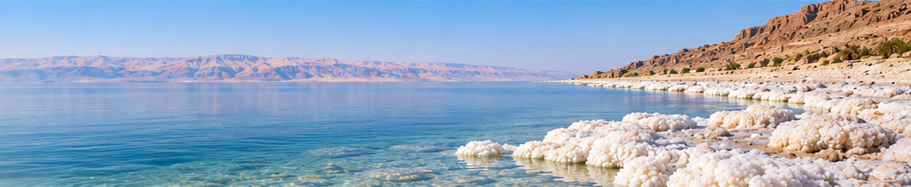
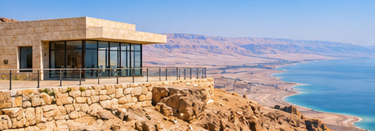
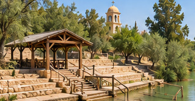
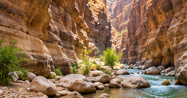
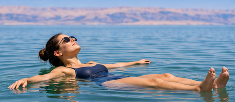
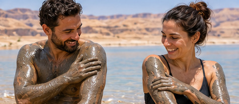
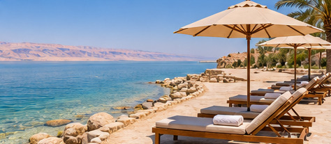

The Dead Sea
A day by the saltwater
Places to explore
-

Dead Sea Panorama Museum
A museum high on the cliffs that explains the sea’s geology, wildlife and history, with a lookout over almost the whole sea.
-

Nearby excursionBethany Beyond the Jordan
The place by the Jordan River where Jesus is believed to have been baptised, with remains of Roman and Byzantine churches and baptism pools.
-

Nearby excursionWadi Mujib
Wade upstream through a narrow sandstone gorge to a waterfall on the Siq Trail, open from about April to October.
Experiences to try
-

Float in the Dead Sea
The water is so salty that you float without trying. Lie back, keep the water away from your eyes and rinse off in a shower afterwards.
-

Try the mineral mud
Spread the dark mineral mud on your skin, let it dry in the sun, then wash it off in the sea. It is messy, and that is part of the fun.
-

Relax by the shore
Spend the afternoon by a resort pool or on the beach, and stay for sunset over the hills on the far shore.
Plan your visit
- Suggested visit
- One night, or a long day trip from Amman.
- Getting there
- About an hour’s drive from Amman. The resorts and public beaches are along the north-eastern shore.
- What to bring
- Swimwear, sandals or water shoes, a towel and drinking water.
Don’t shave just before you swim, and keep the water out of your eyes. Bethany and Wadi Mujib are nearby excursions with their own tickets, and the Mujib Siq Trail only opens in the warmer months.